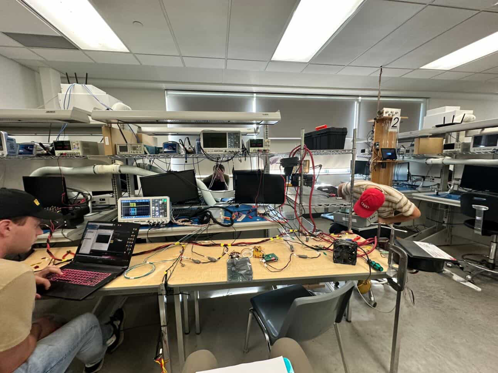
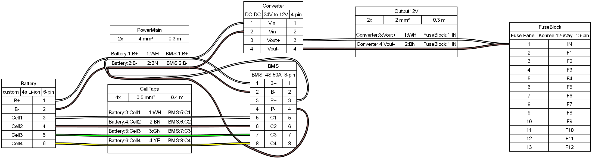
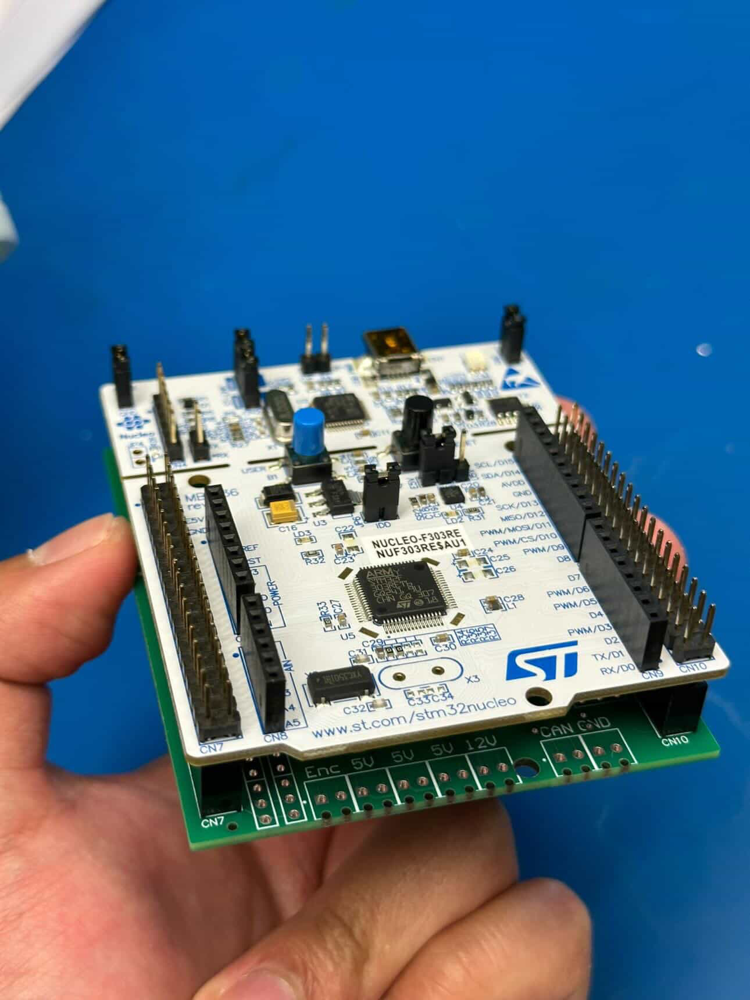
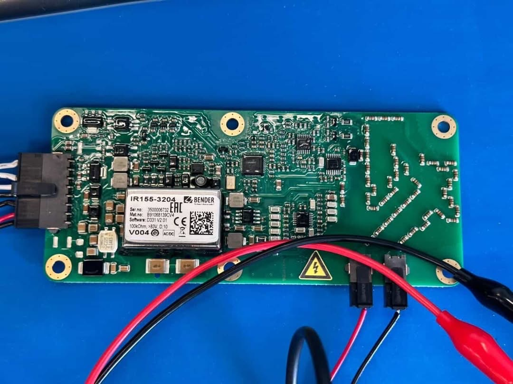
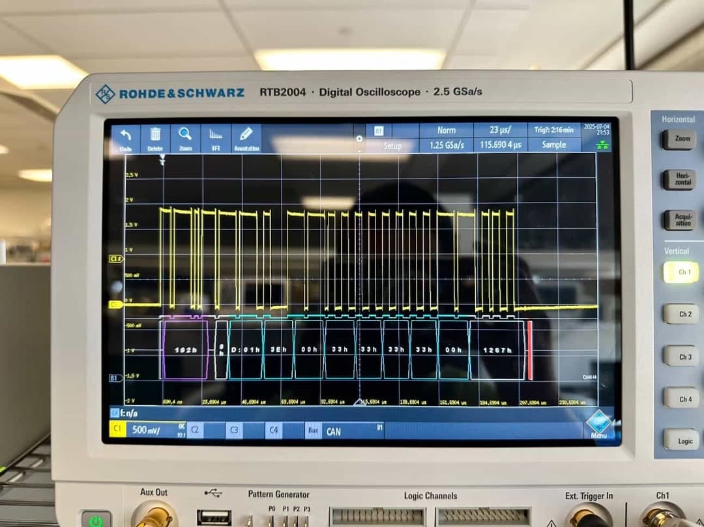
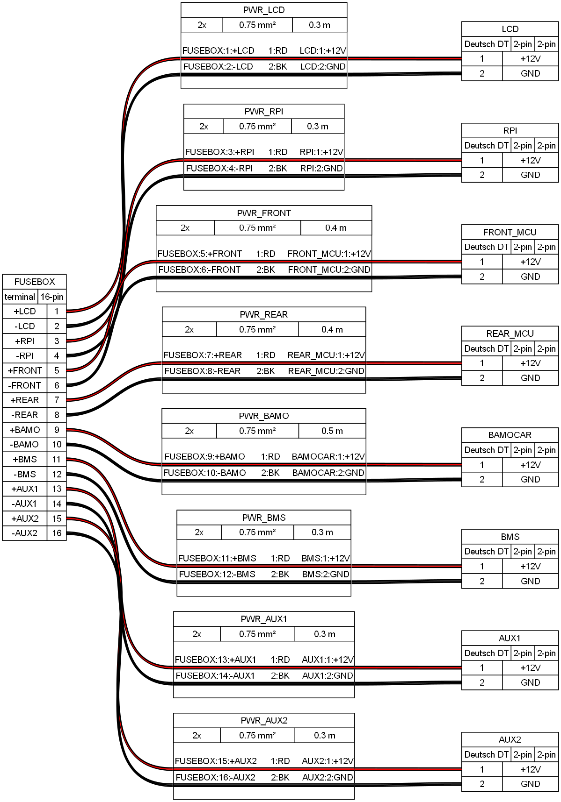
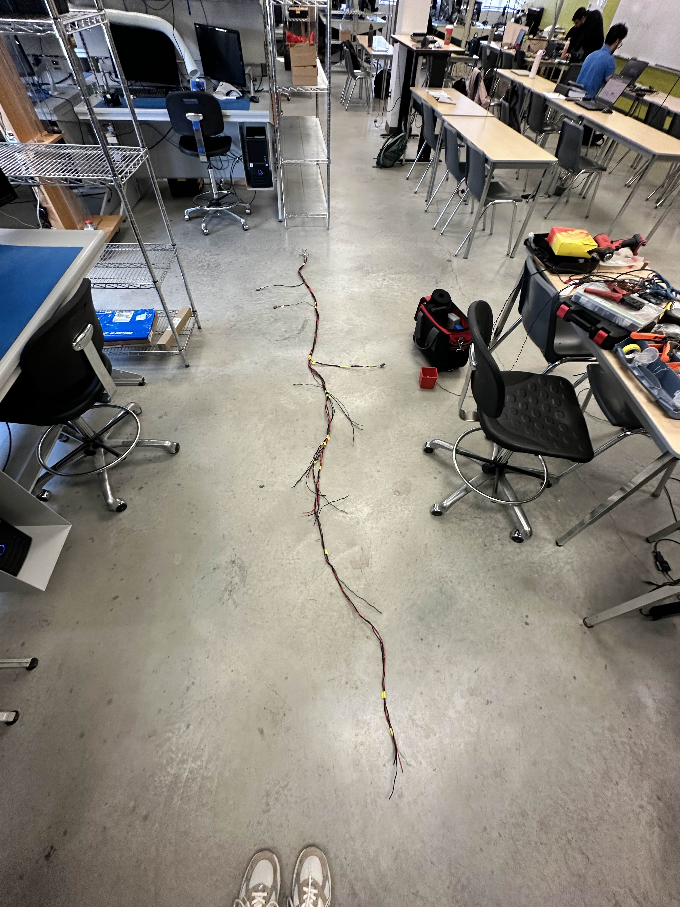
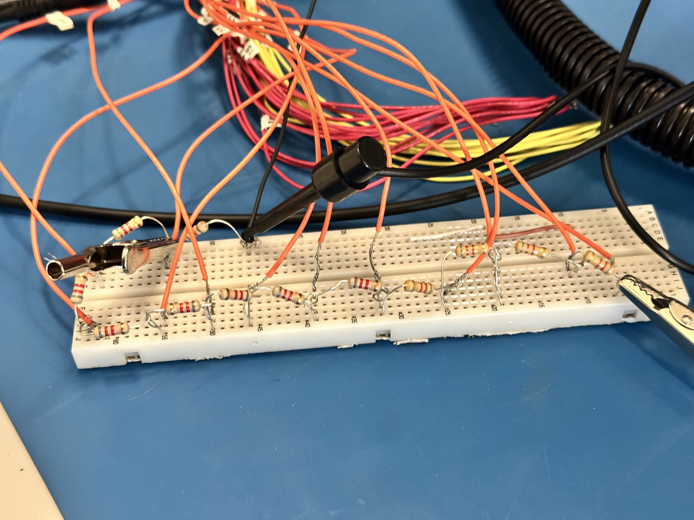

Main Wiring Harness
Custom designed harness routing CAN communication, power, and sensor signals across the vehicle.
Electrical architecture of the Formula SAE electric vehicle including CAN diagnostics, accumulator safety systems, IMD monitoring, harness design, and grounded low-voltage system implementation.

Custom designed harness routing CAN communication, power, and sensor signals across the vehicle.

Electrical diagram illustrating CAN bus routing and node integration across vehicle systems.

STM32 CAN HAT used for vehicle diagnostics and CAN network monitoring.

IMD hardware used to monitor insulation resistance between high voltage system and chassis ground.

Diagnostic output showing IMD fault reporting over the CAN bus network.

Low-voltage grounded power distribution architecture supporting vehicle electronics.

The 12V power, ground, and CAN high and low are braided together branching off to devices to recieve both power and tie into the bus.

The Battery management system expects voltage drops across battery segments, otherwise it will crowd the CANBUS with error messages. At the time of testing the battery was not available so we simulated this by powering 8 resistors with 30V and wires a voltage tap after each resistor.
Web interface used to monitor vehicle CAN messages and system diagnostics.
Explanation of CAN communication and motor controller integration.
My groupmate walks through the implimentation of the 9DOF sensor to demonstrate how it will be used on the car.